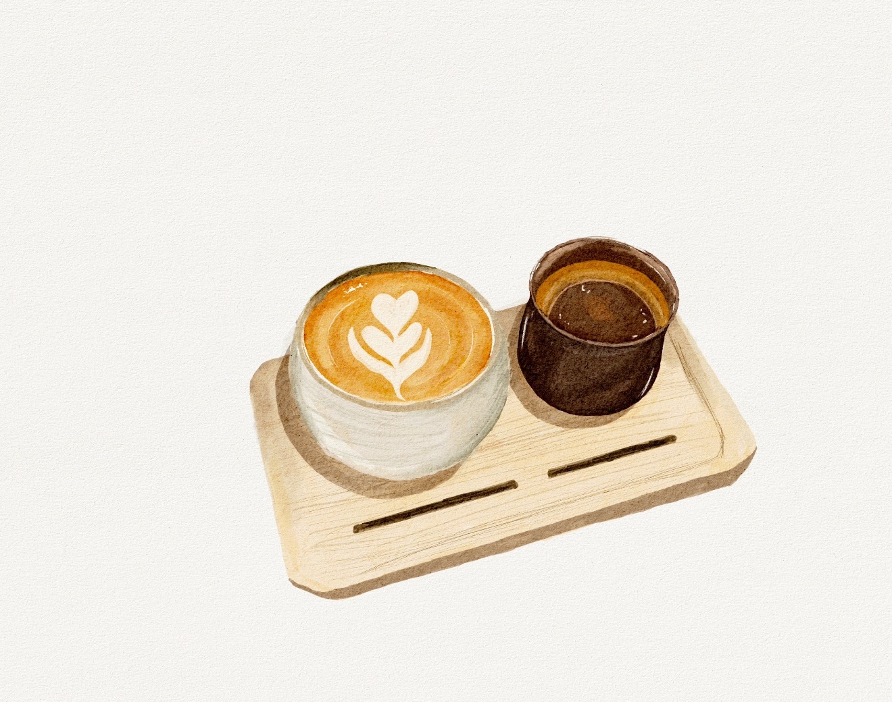

咖啡冲煮方式概览：探索你的咖啡之旅起点
咖啡的世界丰富多彩，而其魅力很大程度上在于多样的冲煮方式。每一种方法都能将咖啡豆中蕴含的风味以独特的方式呈现。了解这些冲煮方式，是开启你咖啡探索之旅的第一步。
滴滤式冲煮 - 手冲咖啡
手冲咖啡是滴滤式冲煮的典型代表，它强调通过热水缓慢而均匀地流过咖啡粉层，萃取出咖啡的精华。这种方式能够最大程度地展现单一产地咖啡豆的独特风味和层次感。
- 使用器具：手冲器具（滤杯、滤纸、分享壶、手冲壶）。
- 萃取特点：运用高水温、慢水流的萃取方式将咖啡表面物质带出，注重冲煮者的技巧和对细节的把控。
意式高压冲煮 - 意式咖啡
意式咖啡以其浓郁的口感和丰富的油脂（Crema）而闻名。它通过意式咖啡机在高压下快速萃取，是许多经典咖啡饮品（如拿铁、卡布奇诺）的基底。
- 使用器具：意式咖啡机。
- 萃取特点：在高温高压下快速萃取出来的咖啡液体，通常量少而浓度极高，是美式拿铁等饮品的咖啡基底——意式浓缩。
低温冲煮 - 冷萃、冰滴
低温冲煮法以其独特的风味和低酸度受到青睐，通过长时间的低温浸泡或滴滤，咖啡风味更加柔和、醇厚。
冷萃
- 使用器具：冷泡壶。
- 萃取特点：在低温下使咖啡粉与水长时间停留在一个容器中萃取，浸泡的方式使咖啡萃取的风味更稳定，口感顺滑，酸度较低。
冰滴
- 使用器具：冰滴壶。
- 萃取特点：以冰水滴滤，经过咖啡粉层长时间发酵萃取，滴滤的时间越长，发酵感越明显，风味独特而复杂。
浸泡式冲煮
浸泡式冲煮的特点是咖啡粉与水在整个萃取过程中保持充分接触，这种方式操作相对简单，且能带来更饱满的口感。
- 常见器具：聪明杯、爱乐压、虹吸壶、法压壶、咖啡杯测。
- 特点：需要根据不同的器具特点，来调整研磨度与冲煮方式，以达到最佳的萃取效果。
了解这些基本的冲煮方式，你就能更好地选择适合自己的咖啡体验，并深入探索每种方法背后的科学与艺术。